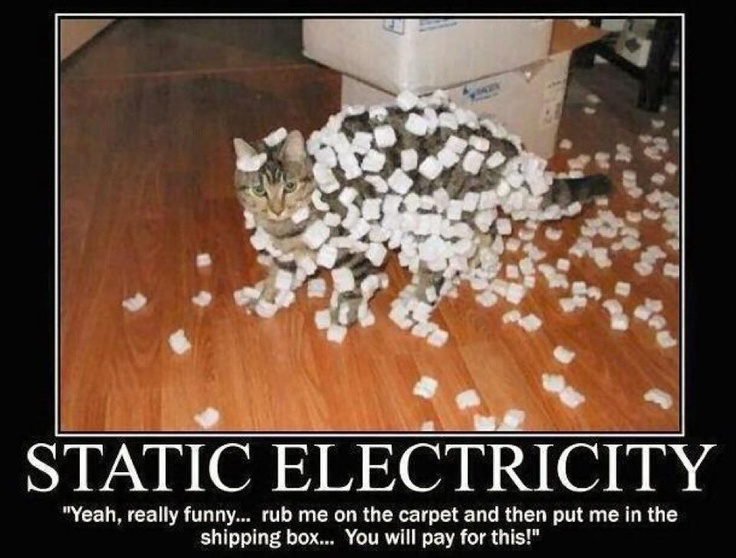

Psalm 147:5
Great is our Lord, and abundant in power; his understanding is beyond measure.
Assignments this week (click me!)
Student Notebook hyperlinks for module 12:
p. 150 in the SNB: link.apologia.com/ECPS2N/12.1 Electrostatic Induction
Required Videos and Links:
Is light a particle or a wave? - A TED-Ed video by Colm Kelleher
2012 Nobel Prize: How Do We See Light?
Optional but Helpful:
Scientist
James Clerk Maxwell bio from Answers in Genesis
How Special Relativity Makes Magnets Work
Vocabulary Flashcards on Quizlet
Module 12 flash cards
